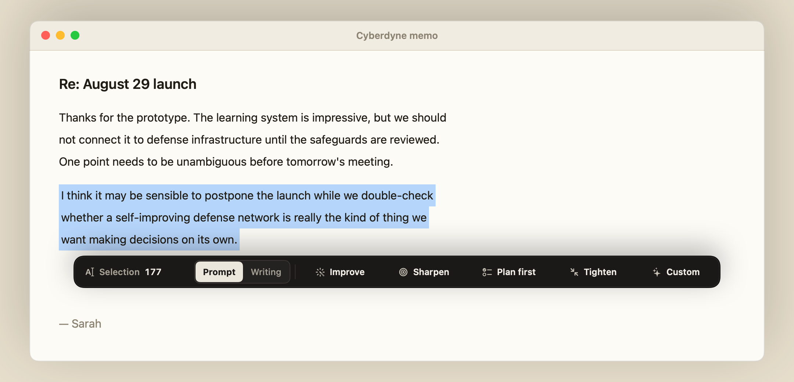

Improve
Make the request clear
Select text in any Mac app and press a shortcut. Mancia rewrites the text with GitHub Copilot CLI and puts it back in the same place. There is no chat window.
Works in apps that support standard Copy, Select All, and Paste.

Make the request clear
Turn notes into instructions
Ask for a plan with goals and checks
Fewer words, same requirements
Fix spelling and grammar only
Remove AI-writing patterns and filler
Rewrite in Simplified Technical English
Format notes as Markdown
Press ⌘E to switch sets. Custom runs your own instruction, for example "make it one decisive sentence".
Use chat to explore ideas. Use Mancia when the text is in front of you and you want to change it.
The ribbon opens below or above a short selection, or beside a tall block. Your text stays visible.
Go back to the previous version that Mancia applied. If the field or text changed, Mancia gives you the result to copy and does not paste.
Mancia puts your clipboard back after each edit. If you copy something while an edit runs, Mancia keeps your copy.
With no selection, Mancia asks before it reads and sends the whole document. After you approve, the result replaces the document. ⌘Z brings the old version back.